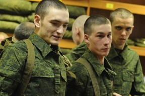

Начальник Академии Сухопутных войск опроверг информацию об отправлении курсантов в Донецкую область
Российское новостное агенство Интерфакс опубликовало 15 апреля новость о том, что якобы старшекурсников львовской Академии Сухопутных войск Украины вооружили и отправили в Донецкую область.
По словам издания, родители курсантов уже успели выразить обеспокоенность и даже провести стихийный митинг.
Однако начальникАкадемии Сухопутный войск, генерал-лейтенант Павло Ткачук, опроверг эту информацию.
«Эта информация абсолютно не соответствует действительности и может расцениваться как очередная неудачная попытка российский спецслужб дестабилизировать ситуацию в Украине и внести раскол в украинское общество», — заявил Ткачук.
По его словам, в данный момент в Академии активно продолжается практическая подготовка курсантов разных специальностей на базе Международного центра миротворчества и безопасности во Львовской области в соответствии с утвердженными ранее учебными програмами подготовки офицеров.
Он сообщил, что во время занятий курсанты практически выполняют упражнения стрельбы, вождения боевых машин, берут участие в учебных упражнениях с тактики, инженерной подготовки.
Подчеркнул, что личный состав Академии настроен патриотично и готов с оружием в руках защищать суверенитет Украины.
Министерство обороны Украины также опровергло информацию об отправке курсантов на восток, особенно обратив внимание на то, что «Эхо Москвы», тиражируя новость, приводит данную фотографию вместе с материалом.
Однако, как утверждает Минобороны, эта форма не имеет отношения не только к Вооруженным Силам, но и вообще к каким либо другим военным формированиям Украины, зато очень напоминает однострой российской армии.
Posted On: 2014-04-14T21:00:00

Content Date: 2014-04-14
Download Date: 2021-07-16
Document ID: L0C04FAU9